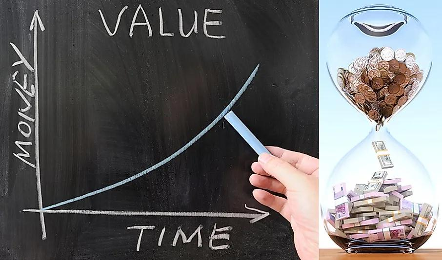

← Back to Index
Example 29 (Slide 121)
The answer depends on what rate of interest
you could earn on any money you receive today.
For example, if you could deposit the $1,000
today at 12% per year, you would prefer to be
paid today.
Alternatively, if you could only earn 5% on
deposited funds, you would be better off if you
chose the $1,100 in one year.
121
Time Value of Money [2]
